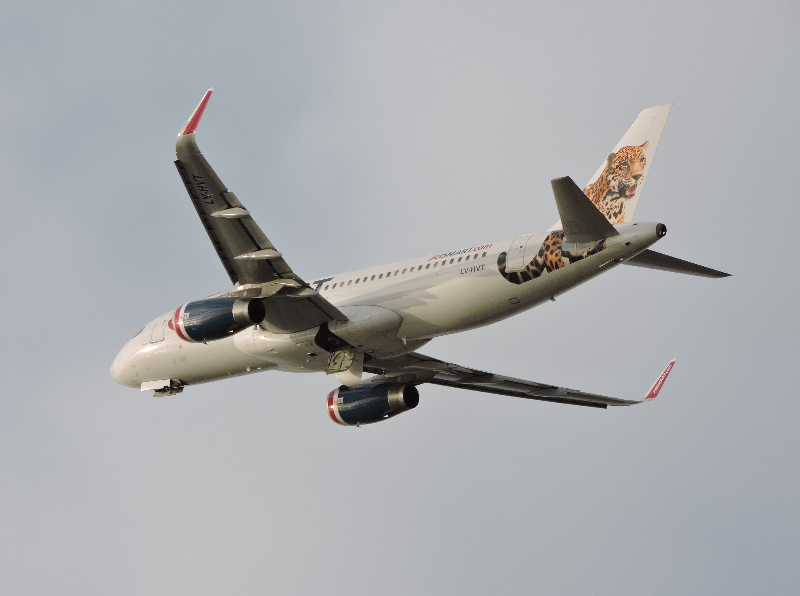
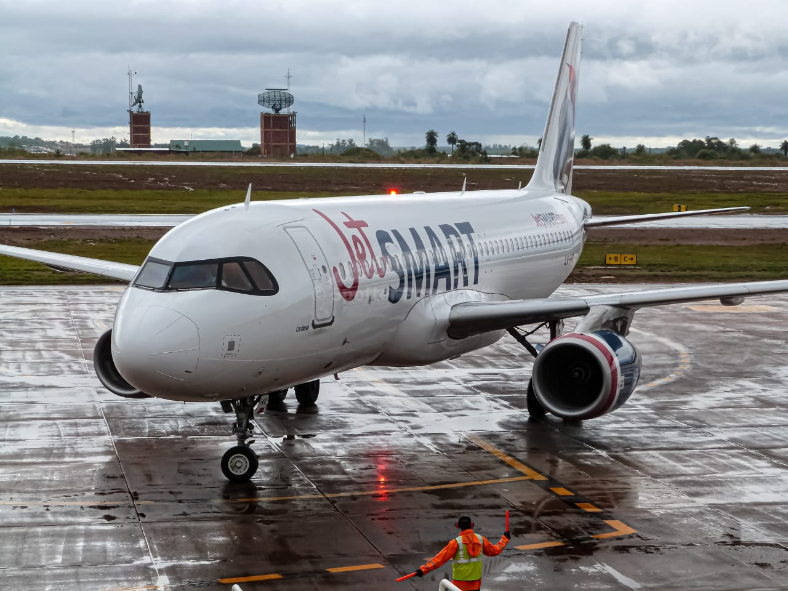
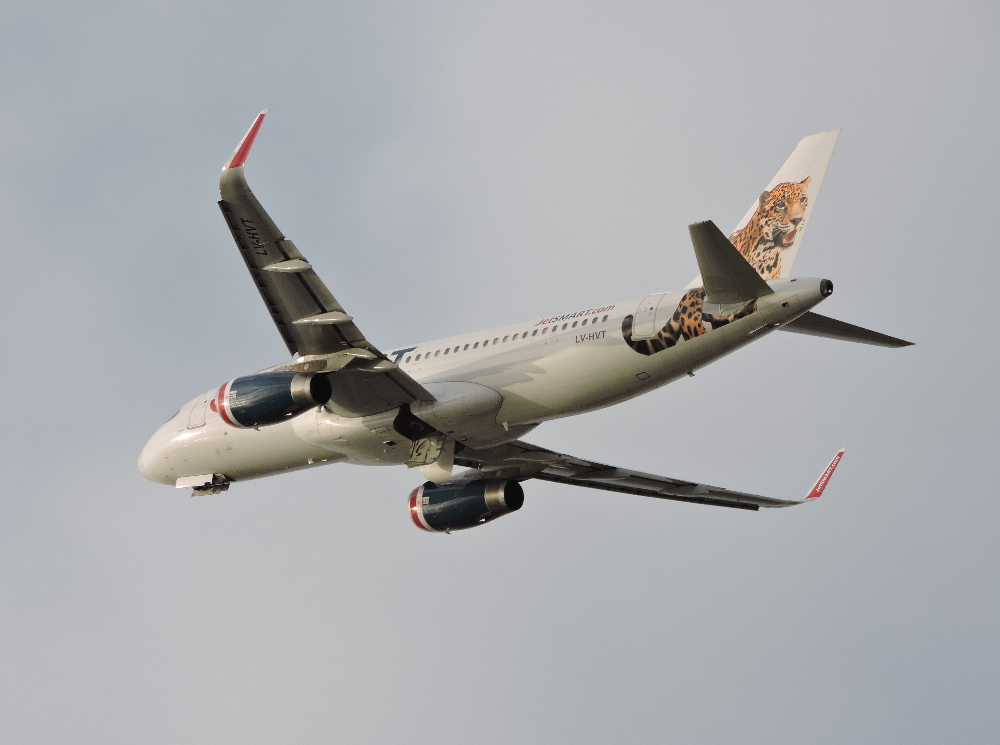
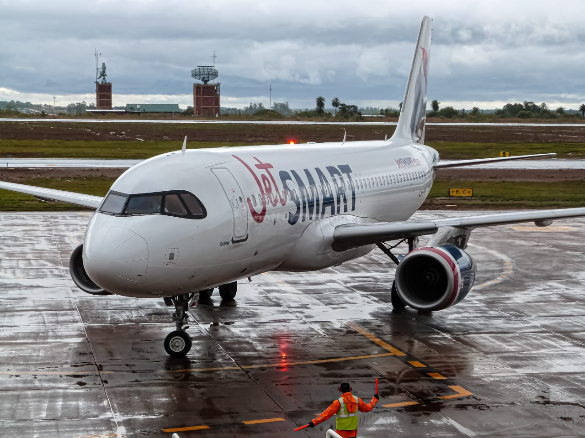

A320-200 IAE
El Airbus A320-200 es un avión a reacción de un único pasillo y dos motores iguales fabricado por el consorcio europeo Airbus Industries. Forma parte de la familia del Airbus A320, la línea de aviones más vendida del mundo. El A320 es probablemente más conocido por ser el primer avión en introducir el sistema fly-by-wire, mediante el cual los controles del piloto se transmiten a las partes en movimiento en vuelo por medio de señales electrónicas en vez de por medios mecánicos.
 




Datos técnicos
- Cantidad en la flota (Argentina): 8
- Capacidad de pasajeros: Hasta un máximo de 180
- Envergadura: 34.1m (111 feet 11 inches)
- Altura: 11.8m (38 feet 7 inches)
- Motores: 2 motores IAE V2500
- Velocidad máxima: 828 km/h (511 mph, Mach 0,78)
- Autonomía: hasta 6500 km (4000 millas)
Nuestra Flota
LV-HEK "Huemul"

Es un animal que se encuentra en peligro de extinción y actualmente su situación es declarada como extremadamente crítica. Un ciervo noble que día a día desaparece de nuestra tierra, hoy aparece en el cielo junto al Airbus A320, demostrándole a Sudamérica que aún existe y que es un representante de la región.
LV-HVT "Jaguar"

El Airbus A320 es un avión que lidera las preferencias dentro de las aerolíneas del mundo. Una aeronave que destaca gracias a su soberanía, al igual que lo hace el Jaguar, el felino líder de América. Ambos, siendo exponentes de la velocidad, la belleza y la eficiencia, han logrado posicionarse como grandes íconos dentro de la región.
LV-IVN "Zorro Culpeo"

El Zorro Culpeo es nativo del lado oeste de Sudamérica, desde Ecuador a Perú hasta las regiones más al sur de la Patagonia y Tierra del Fuego. Nuestros aviones A320 también, hoy nos acompañan en los destinos de Chile, Argentina y Perú.
LV-IVO "Cardenal"

El ave Cardenal es una especie propia del hemisferio sur; Brasil, Paraguay, Uruguay y, principalmente Argentina, son los países donde ellos habitan. Es considerada como exótica por su color rojo intenso y las características de su canto. Hoy, el cardenal nos acompaña en nuestro avión A320 que vuela en las rutas nacionales de Argentina e internacional hacia Santiago de Chile.
LV-JQE "Pingüino Rey"

El nuevo Airbus A320 es una aeronave que al igual que el Pingüino Rey, gobierna sobre los terrenos del hemisferio sur. Es capaz de desplazarse sin complicaciones sobre las versátiles superficies que nos entrega esta zona, adaptándose naturalmente al ecosistema que predomine en la región.
LV-KDP "Puma Concolor"

La agilidad, la astucia y la versatilidad definen al puma. Coincidentemente, también son las características que más representan a nuestro nuevo Airbus A320. Además de esto, ambos nacen diseñados para combinar la fuerza y la velocidad, obteniendo como resultado un potente despegue del suelo, que les permite alcanzar cualquier objetivo.
LV-KFX "Cóndor Andino"

La eficiencia y aerodinamismo del Airbus A320 de JetSMART hacen de esta una aeronave formidable para vuelos de corta y larga distancia. Su excelente rendimiento le permite llegar a todas las capitales sudamericanas y centroamericanas sin necesidad de escalas, al igual que el Cóndor, quien puede alcanzar grandes alturas y volar por tiempos prolongados sin complicaciones.
LV-KJA "Martín Pescador"

El Airbus A320 de JetSMART es de gran agilidad y versatilidad de vuelo. Incorpora dispositivos de aerodinámica en sus alas llamados Sharklets, los cuales permiten un óptimo rendimiento y eficiencia de combustible. El Martín Pescador, ave insigne de JetSMART, caza peces con gran destreza, pero si la zona de pesca no es óptima, no tiene inconvenientes en sobrevolar sin problemas el área hasta que se de la oportunidad, igual que nuestro A320 que puede mantenerse en vuelo sin ninguna complicación por tiempos prolongados.